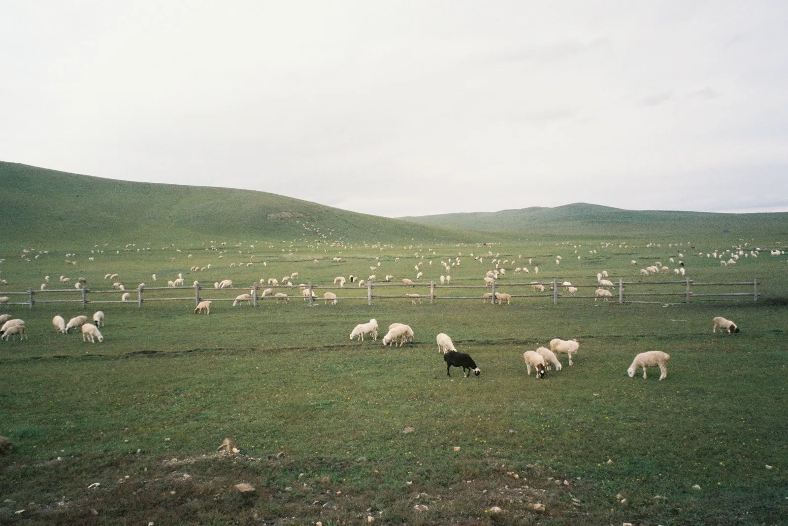

BasicPlano Basic
R$ 259,90/ mês
Entre um lote e outro, cada animal tem sua história. O Ovis aproxima você do que importa no rebanho.
A rotina acontece no campo. O Ovis nasce para fazer parte dela: uma forma mais próxima de olhar cada animal, sem perder de vista o todo.
Veja como isso ganha formaO rebanho tem ritmo próprio.
O cuidado acompanha.
Do campo para a tela, sem perder a essência. Uma prévia do Ovis no celular, com dados de demonstração.

UM REBANHO. MUITAS HISTÓRIAS.
Uma ficha que dá rosto aos registros do dia a dia.
Captura do protótipo em execução. Dados simulados.Ele pode caber na mão de quem está lá todos os dias.
Explore os valoresDigite a quantidade e compare os preços da tabela enviada pela equipe para Basic, Plus e Pro. Esta simulação não indica um plano ideal nem inicia uma assinatura.
Valores informados na tabela enviada pela equipe Ovis. Simulação de preço, não contratação.
No pagamento anual, o total dos 12 meses tem 15% de desconto.
As faixas de 250 e 500 aparecem com asterisco na tabela original, sem explicação das condições. Aqui são interpretadas como até 250 e até 500 ovinos; confirme a regra comercial antes de contratar. Acima de 500 ovinos, não há preço informado. As diferenças de recursos entre Basic, Plus e Pro ainda não foram fornecidas.
As capturas do app e o mapa usam dados simulados. Não há conta, sincronização entre as prévias ou assinatura ativa neste site. A calculadora compara os valores informados pela equipe; não processa pagamentos.